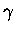

Next: About this document ...
Up: No Title
Previous: Appendix - STAMP Academic
- 1
-
R. B. Russell and G. J. Barton.
Multiple protein sequence alignment from tertiary structure
comparison: assignment of global and residue confidence levels.
Proteins, 14:309-323, 1992.
- 2
-
A. Sali and T. L. Blundell.
Definition of general topological equivalence in protein structures,
a procedure involving comparison of properties and relationships thorugh
simulated annealing and dynamic programming.
J. Mol. Biol., 212:403-428, 1990.
- 3
-
P. Argos and M. Rossmann.
Exploring structural homology of proteins.
J. Mol. Biol., 105:75-95, 1976.
- 4
-
T. F. Smith and M. S. Waterman.
Identification of common molecular subsequences.
J. Mol. Biol., 147:195-197, 1981.
- 5
-
G. J. Barton.
An efficient algorithm to locate all locally optimal alignments.
Comp. App. Biosci., 9:729-734, 1993.
- 6
-
D. Sankoff and J. B. Kruskal, editors.
Time warps, string edits, and macromolecules: The theory and
practice of sequence comparison.
Addison-Wesley, Inc., Reading, Mass., USA, 1983.
- 7
-
W. Kabsch.
Acta crystallographica, A34:827, 1978.
- 8
-
A.D. McLachlan.
Gene duplication in the structural evolution of chymotrypsin.
J. Mol. Biol., 128:49-79, 1979.
- 9
-
R. B. Russell and G. J. Barton.
An SH2-SH3 domain hybrid.
Nature, 364:765, 1993.
- 10
-
R. B. Russell and G. J. Barton.
The limits of protein secondary structure prediction accuracy from
multiple sequence alignment.
J. Mol. Biol., 234:951-957, 1993.
- 11
-
R. B. Russell and G. J. Barton.
Structural features can be unconserved in proteins with similar
folds: An analysis of side-chain to side-chain contacts, secondary
structure and accessibilty.
J. Mol. Biol., 244:332-350, 1994.
- 12
-
R. B. Russell.
Domain insertion.
Prot. Eng., 7:1407-1410, 1994.
- 13
-
R. B. Russell, M. A. Saqi, R. A. Sayle, P. A. Bates, and M. J. E. Sternberg.
Recognition of analogous and homologous protein folds: Analysis of
sequence and structure conservation.
J. Mol. Biol., 269:423-439, 1997.
- 14
-
R. B. Russell, M. A. S. Saqi, P. A. Bates, R. A. Sayle, and M. J. E. Sternberg.
Recognition of homologous and analogous protein folds: assessment of
prediction success and associated alignment accuracy using empirical
substitution matrices.
Prot. Eng., 11:1-9, 1998.
- 15
-
A. G. Murzin.
Sweet-tasting protein monellin is related to the cystatin family of
thiol proteinase inhibitors.
J. Mol. Biol., 230:689-694, 1993.
- 16
-
S. Matthews, P. Barlow, J. Boyd, G. Barton, R. Russell, H. Mills,
M. Cunningham, N. Meyers, N. Burns, N. Clark, S. Kingsman, A. Kingsman, and
I. Campbell.
Structural similarity between the p17 matrix protein of HIV-1 and
interferon-.
Nature, 370:666-668, 1994.
- 17
-
W. R. Taylor.
Classification of amino acid conservation.
J. Theor. Biol., 119:205-218, 1986.
- 18
-
P. J. Kraulis.
Molscript: a program to produce both detailed and schematic plots of
protein structures.
J. App. Cryst., 24:964-950, 1991.
- 19
-
W. Kabsch and C. Sander.
A dictionary of protein secondary structure.
Biopolymers, 22:2577-2637, 1983.
- 20
-
G. J. Barton.
Alscript: A tool to format multiple sequence alignments.
Prot. Eng., 6:37-40, 1993.
- 21
-
R. B. Russell and M. J. E. Sternberg.
A novel binding site in catalase is suggested by similarity to the
calycin superfamily.
Prot. Eng., 9:107-111, 1996.
- 22
-
R. B. Russell and M. J. E. Sternberg.
Two new examples of protein structural similarities within the
structure-function twighlight zone.
Prot. Eng., 10:333-338, 1997.
- 23
-
M. J. E. Sternberg, H. Hegyi, S. A. Islam, J. Luo, and R. B. Russell.
Towards and intelligent system for the automatic assignment of
domains in globular proteins.
Proceedings of the 3rd Annual Conference on Intelligent Systems
for Molecular Biology, pages 376-383, 1995.
- 24
-
A. S. Siddiqui and G. J. Barton.
Continuous and discontinuous domains: an algorithm for the automatic
generation of reliable protein domain definitions.
Prot. Sci., 4:872-874, 1995.
- 25
-
R. B. Russell, R. R. Copley, and G. J. Barton.
Protein fold recognition from secondary structure assignments.
Proc. 28th Hawaii. Int. Conf. Sys. Sci. IEEE Press, 5:302-311,
1995.
- 26
-
R. B. Russell, R. R. Copley, and G. J. Barton.
Protein fold recognition by mapping predicted secondary structures.
J. Mol. Biol., 259:349-365, 1996.
- 27
-
R. B. Russell, P. D. Sasieni, and M. J. E. Sternberg.
Supersites within superfolds. binding site similarity in the absence
of homology.
J. Mol. Biol., 282:903-918, 1998.
- 28
-
M. A. S. Saqi, R. B. Russell, and M. J. E. Sternberg.
Misleading local sequence alignments: implications for comparative
protein modelling.
Prot. Eng., 11:627-630, 1998.
- 29
-
Anonymous.
Geoff Barton
1999-04-16